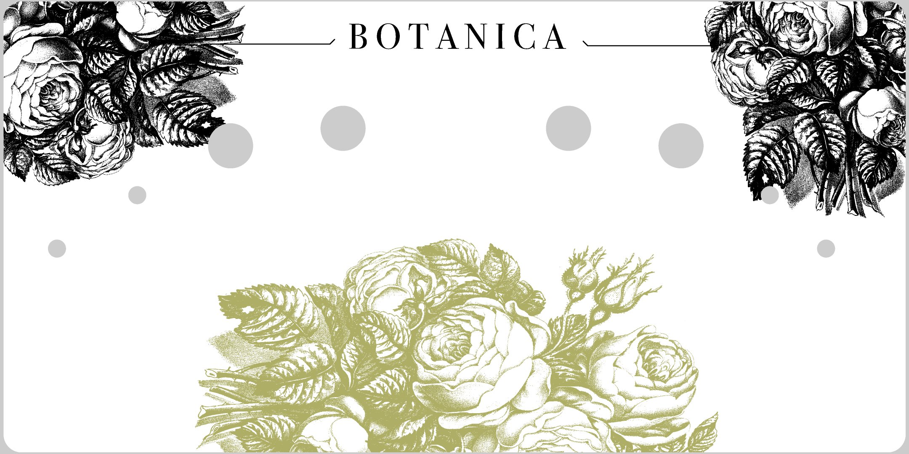

EDIT MODE — drag knobs to position
click a knob to see coords
—
Copy the id+top+left values
into the HTML to save.
MIDI —
STOPPED
OUT —
WebMIDI requires Chrome + HTTPS or localhost
· · · · · · · · · · · · · · · ·

BOTANICA · drag knobs up/down · WebMIDI via Chrome
v1.0
© 2026 CHRIS VAN DER LINDEN · HUMAN MOTIVES
BOTANICA
— NATURAL SEQUENCER —
v1.0 · © 2026 Chris van der Linden · Human Motives
click outside to close · BOTANICA by Human Motives · 2026